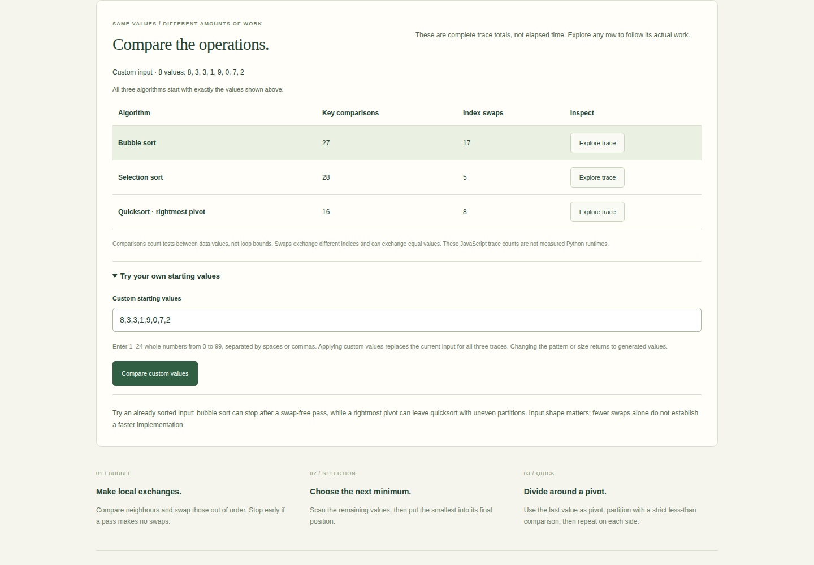
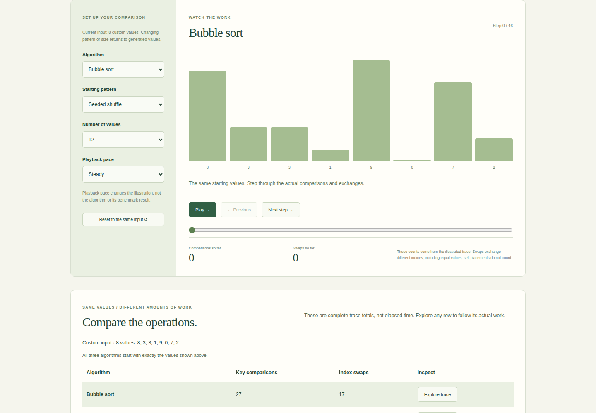

Sorting algorithms, measured.
Compare sorting work on the same input, inspect each real trace and keep operation counts separate from measured runtimes.
Interactive browser explanation of three sorting approaches. Playback is illustrative; measured Python benchmarks are presented separately.

What I built
Extended Sort Lab with complete operation comparisons and validated custom inputs while preserving all five Python implementations, their tests and traceable benchmark observations.
Why it matters
Two methods can produce the same answer while taking very different amounts of work. Correctness and measurement help make that trade-off visible.
How it works
- 01
Choose a generated pattern/size or enter 1–24 whole numbers; the same unchanged starting input feeds all three browser traces.
- 02
Compare complete key-comparison/index-swap totals, then open any trace, step backwards/forwards or reset to that exact input.
- 03
Inspect the separately measured five-algorithm Python benchmark, whose unchanged implementation/output hashes preserve the original observations.
The technical challenge
A comparison is only fair if every algorithm starts with the same values. The original controls regenerated input whenever the algorithm changed; deterministic examples hid that dependency. A shared current-input state and cached traces now keep custom values stable across selection, exploration and reset. Complete totals and in-progress counters are labelled separately, while the measured benchmark remains a separate experiment.
What it demonstrates
Algorithmic reasoning, controlled comparisons, state management, regression testing and accessible interactive explanation.
Evidence, with context.
Five Python implementations passed correctness checks on 125 measured sorts: five identical seeded random samples at each size from 50 to 1,000. Median and IQR are calculated from saved raw measurements. Measurements were recorded on Windows-11-10.0.26300-SP0 with Python 3.12.2; unchanged algorithm hashes reuse those observations. The browser explorer compares complete key-comparison/index-swap totals for three actual traces on the same generated or validated custom input. Selecting a trace and resetting preserve its starting values. These operation counts and animation pace are separate from the recorded Python runtime measurements.
Verified source: 0eae4a2cac4d · Tests and visual capture ↗




Scope and limitations
Measurements cover random non-negative integer inputs from 50 to 1,000 in one recorded environment; they do not establish a universal ranking. IQR describes observed variation, not confidence. Rightmost-pivot recursive quicksort has adverse-input recursion limits. Radix supports non-negative integers and rejects booleans/fractions. The browser explorer ports only three approaches and limits inputs to 24 values; animation pace is unrelated to Python runtime.
Visual provenance and source attribution are recorded in the evidence register ↗.
Under the surface.
Architecture, methods and improvements
Seven Python tests preserve algorithm correctness and benchmark-cache provenance. Five Node checks compare final traces with actual Python outputs, preserve every intermediate multiset, reconcile independently known counts and validate custom input syntax/bounds. Three browser journeys verify all row-to-trace totals, duplicate/custom input, retained-input resets, invalid-input recovery, playback and dense 24-value mobile layout. Cached traces make algorithm selection reuse the exact same input. Swaps count exchanges between different indices, including equal values; self placements are shown but not counted. Bar heights share a scale across each input and zero values remain visible. Python algorithm bytes and recorded benchmark data are unchanged.
Try it locally
Install requirements.txt; run python benchmark_portfolio.py, python plot_portfolio.py and python -m unittest discover -p "test_*.py" -v. Use --refresh to request new measurements. For browser verification, build Python fixtures and docs, npm ci, npm run test:trace and npm run test:browser.
The portfolio is a static GitHub Pages site. Server applications run locally; the portfolio does not collect bookings, credentials or payments.